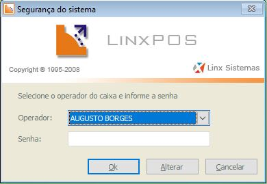

LinxPOS Manager
O Linx POS Manager possui ferramentas para movimentação de estoque (entradas, saídas, inventário e consultas), gerenciamento dos caixas, do relacionamento com os clientes, além de disponibilizar diversas consultas e operações para reserva e consignação de produtos, entre outras características.
Caixa
Por meio desta opção é possível gerenciar todos os movimentos ocorridos nos terminais de venda, uma vez que o sistema apresenta diversas consultas e relatórios. Os filtros disponíveis permitem selecionar datas, períodos, terminais e operadores.
Para acessar esta funcionalidade, realize os passos a seguir:
- Acesso o Menu principal do LinxPOS Manager.
- No menu Caixa, clique na opção
Relatórios. - Na área superior da tela, informe os filtros para configuração.
- Configurados os filtros, clique em Pesquisar (F3). Os dados serão apresentados nas abas disponíveis.


| DATA | Selecione um período de datas para apresentação dos dados ou marque como data atual. |
| Período | apresenta nas abas de consulta, informações de todos os períodos do caixa. O período atual é apresentado na parte superior da tela |
| Terminal | Todos os terminais: apresenta nas abas de consulta, informações de todos os terminais da loja. |
| Somente os terminais: exibe nas abas de consulta, as informações do terminal informado. | |
| Operador | Todos os operadores:apresenta nas abas de consulta, informações de todos os terminais da loja. |
| Somente o operador: exibe nas abas de consulta, informações referentes ao operador selecionado. |
| Saldo do Caixa | Apresenta a movimentação financeira do caixa, como os totais de vendas em todas as formas de pagamento disponíveis, devoluções, vales produtos emitidos, subtotais e totais. |
| Resumo de Vendas | Apresenta os tickets emitidos, descontos e acréscimos aplicados em vendas e pagamentos, valor bruto e valor líquido das vendas. |
| Movimentações de Caixa | Apresenta as movimentações de caixa relacionadas a despesas e receitas diversas da loja, como por exemplo: lanches, troco etc. |
| Tipos de Pagamento | Relaciona os tipos de pagamento ocorridos e seus respectivos valores. |
| Notas Fiscais | Apresenta os dados constantes nas Notas Fiscais emitidas, como código e descrição da natureza, valor dos itens, impostos, dentre outros. |
| Associação de Trocas | Apresenta um resumo do relatório. |
| Relatórios | Permite emitir diversos tipos de relatórios. Resumos do Caixa: apresenta o resumo das movimentações do caixa. Movimentações: apresenta as movimentações de entrada, saída e um resumo de ambos. Clientes por Vendas: apresenta a relação de compras dos clientes por data, dividindo as informações por quantidade, valor, número do ticket e forma de pagamento. Tickets por vendedor (Ranking): relaciona por vendedor, a média de tickets com o valor das vendas e as quantidades vendidas e trocadas. Trocas e cancelamentos: apresenta a movimentação de trocas e cancelamentos, com a condição de selecionar os cancelamentos de itens, cupons e cancelamento no ECF. |
Estoque
Por meio desta opção é possível controlar todas as movimentações de estoque das lojas, como entrada de mercadorias por transferência manual ou coletor, por trânsito ou por fornecedor, saídas, consultas ao estoque e realização de inventário.
Entrada de Mercadorias (Transferências)
Toda vez que é realizada uma saída de mercadoria em outra loja que não seja a sua ou pelo escritório (Matriz), é gerada uma entrada automática desta mercadoria na sua loja. Esta entrada fica em trânsito, aguardando a loja confirmar o recebimento.
Para iniciar a entrada de mercadoria, realize os procedimentos a seguir:
- Selecione a opção Estoque
- Selecione a opção Entrada de Mercadorias.
- Informe o Operador e Senha.
- Será exibida a tela de entrada de Mercadorias. Clique no botão Novo (F5).
- Informe o tipo de entrada selecionando o botão Transferência.
- Selecione a opção Trânsito.
- Será apresentada a tela para selecionar o Romaneio a Receber. Selecione a na Nota a receber e clque no botão Selecionar.
- Na Aba ENTRADA, SEMPRE verificar se os dados conferem com os dados da NF - Nota Fiscal recebida (Número da NF ou Chave NFE, tipo de entrada, tabela de preço, filial de origem – loja que enviou a NF, quantidade e o valor da nota)
- As notas de entrada sempre devem estar selecionadas como NF ELETRÔNICA na opção Espécie Série. Nehuma oura opção deve ser selecionada neste processo.
- Acesse a aba PRODUTOS e realize a conferência das quantidades e dos produtos recebidos.
- Ao finalizar a conferência, selecione SEMPRE as opções abaixo:
- Clique no botão Salvar (F4).




 Atenção: Caso não sejam selecionadas as Opções de Conferida e Encerrada o Estoque não será atualizado e o Escritório não conseguirá identificar que foi realizada a entrada dessa Nota Fiscal.
Atenção: Caso não sejam selecionadas as Opções de Conferida e Encerrada o Estoque não será atualizado e o Escritório não conseguirá identificar que foi realizada a entrada dessa Nota Fiscal.

Consulta de estoque
Nas opções de FILTROS é possível consultar o produto por:
- Referência
- Descrição
- Cor
- Filial
- Código de barras
- No menu ESTOQUE, selecione a opção Consulta de estoque. Será apresentada a tela de consulta.
- Informe o produto, cor ou o código de barras e clique no Pesquisar (F3).

| Estoque atual: | apresenta o estoque atual do produto selecionado. |
| Estoque atual com trânsito: | exibe o estoque do produto mais os itens do mesmo produto que estão em trânsito. |
| Produtos em trânsito: | apresenta apenas os itens do produto que estão em trânsito. O estoque atual não é mostrado. |
| Reservas: | Não é utilizado pela Maria Filó. |
| Estoque atual sem reservas: | Não é utilizado pela Maria Filó. |
Devolução de Mercadoria
Antes de começarmos uma devolução precisamos nos atentar ao seguintes processos:
- Ter as notas de origem em mãos das peças que serão feitas as devoluções
- Verificar se a entrada das notas de origem foram realizadas corretamente
- Selecione a opção Estoque
- Selecione a opção Saída de Mercadorias.
- Informe o Operador e Senha.
- Será exibida a tela de Saída de mercadorias. Clique no botão Novo (F5).
- O sistema exibirá as opções disponíveis. Selecionar a Opção: MANUAL.
- Agora vamos iniciar a geração da nota. Devemos preencher os seguintes campos:
- Série: Sempre será 4
- Tipo de Saída: Saída por Devolução
- Tabela de Preços: Sempre será Tabela de Compras (Exemplo: AMERICAS COMPRAS)
- As opções Romaneio, Nota Fiscal e Emissão serão colocadas automaticamente quando salvar a nota.
- Na opção Saída/Devolução marque a opção: É uma saída ou devolução. Depois marque a opção: Fornecedor e coloque dessa forma: MATRIZ MARIA FILÓ. Um atalho para facilitar é colocar matriz% aperte TAB no teclado ele irá completar automaticamente.
- Na opção Responsável coloque o nome de quem está gerando a nota.
-
Nosso próximo passo e incluir os produtos da nota para isso devemos ter as notas de origem em mãos
Na tela que vimos acima clique na aba PESQUISA DE NOTAS FISCAIS Nessa Tela que iremos incluir os nossos produtos, selecione a opção nota fiscal e digite, o numero da nota fiscal de origem e clica no botão pesquisar. Ao clicar nesse botão ele irá aparecer uma mensagem, clique em OK, fazendo isso irá carregar os produtos.
Nessa Tela que iremos incluir os nossos produtos, selecione a opção nota fiscal e digite, o numero da nota fiscal de origem e clica no botão pesquisar. Ao clicar nesse botão ele irá aparecer uma mensagem, clique em OK, fazendo isso irá carregar os produtos.
 Após o sistema carregar os produtos na tela você deve escolher o produto marcando a caixa de seleção dele e escolher a quantidade e a peça que você vai devolver. Ao final clique no botão gravar selecionados.
Após o sistema carregar os produtos na tela você deve escolher o produto marcando a caixa de seleção dele e escolher a quantidade e a peça que você vai devolver. Ao final clique no botão gravar selecionados.
- Ao pesquisar a nota pode ser que ela não traga nenhum produto se isso ocorrer entre em contato conosco, Suporte que faremos a correção.
- Após selecionar os produtos que você vai devolver, vá na aba PRODUTOS e verifique se todos se encontram lá e se estão corretos. Se tiver alguma diferença clique em cima do produto e clique no x vermelho para excluir, e volte na aba PESQUISA DE NOTAS FISCAIS e faça o processo de importação dele novamente.
- acesse a aba SAÍDA e marque a opção encerrada:
- Depois marque salvar. Feito esse processo será aberto uma tela para realizarmos a geração da nota fiscal de transporte.
- Devemos inserir as seguintes informações:
Natureza: 5202 Franquias dentro do estado do Rio de Janeiro 6202 Franquias fora do Rio de Janeiro - Série: 4
- Marque a opção: Filial
Código: 0019999
MATRIZ MARIA FILÓ - Ao finalizarmos o processo das informações do cabeçalho da nota, vamos inserir as informações relacionadas as obrigações fiscais da nota

Ao abrir a tela iremos na aba ITENS FISCAIS e vamos procurar a coluna tributação origem e nessa aba que consultamos se os produtos são nacionais ou importados. Esse procedimento tem que ser feito para efetuarmos o calculo da alíquota de imposto dos produtos.
Esse procedimento tem que ser feito para efetuarmos o calculo da alíquota de imposto dos produtos.
Todo produto que tiver com o numero 0 na tributação origem e nacional e todo produto que tiver 1,2 ou 3 e produto importado.
Para calcular os produtos nacionais você deve somar todos os produtos e dividir pela a porcentagem da sua alíquota
Exemplo:
2 produtos que no total dão 450,00, pegue esse valor e divida por sua alíquota, aqui usarei a alíquota de Ribeirão Preto de 12% o seu total será 54,00.
A mesma coisa para produtos importados só que para todos os produtos importados a sua alíquota e 4%. 450,00x 4% =18,00
Após os cálculos usamos os resultados para colocarmos em um texto que colocamos na aba de OBSERVAÇÕES.
Exemplo do Texto para Nacional: PERMITE O APROVEITAMENTO DO CRÉDITO DE ICMS NO VALOR DE R$ 54,00; CORRESPONDENTE À ALÍQUOTA DE 12%, NOS TERMOS DO ART. 23 DA LEI COMPLEMENTAR Nº 123, DE 2006 Exemplo do Texto para Importado: PERMITE O APROVEITAMENTO DO CRÉDITO DE ICMS NO VALOR DE R$ 18,00; CORRESPONDENTE À ALÍQUOTA DE 4%, NOS TERMOS DO ART. 23 DA LEI COMPLEMENTAR Nº 123, DE 2006 Importante: Se a nota tiver produtos nacionais e importados para devolver e um texto para nacional e um texto para importados. - Na aba TRANSPORTADORA coloque a transportadora que irá levar a mercadoria.
- Na aba CABEÇALHO se atente a Quantidade Total ela deve ser igual a de produtos que você, esta devolvendo

Volumes: Coloque a quantidade de caixas que serão enviadas. Peso: Coloque o peso da caixa pode ser uns 10kg se atente que se você trocar de aba a informação de peso ira voltar zerada. Tipo de Frete: Está opção você coloca quem será responsável em pagar o frete.
Feito esse processo clique em OK para enviar a nota para validação na SEFAZ, se tudo ocorrer forma correta o SEFAZ validará a nota e irá dizer que a nota foi autorizada e se você deseja imprimir o romaneio e a nota fiscal.
Qualquer erro que de na nota fiscal entre em contato com o T.I.


Erros Comuns:


Aperte Finalizar.

Notas fiscais
A nota fiscal eletrônica (NF-e) é um documento de existência apenas digital, emitido e armazenado eletronicamente, com o intuito de documentar uma operação de circulação de mercadorias ou uma prestação de serviços ocorrida entre as partes.
Esta funcionalidade permite visualizar as notas fiscais que já foram emitidas, bem como configurar e realizar a emissão de novas notas.
Para iniciar a emissão de notas fiscais, realize os passos a seguir:
- No menu GERENCIAL, acesse o ícone NOTAS FISCAIS.
- Informe o OPERADOR e SENHA.
- Será exibida a tela de NOTAS FISCAIS. Clique no botão NOVO (F5) para iniciar a emissão da nova nota.
- O sistema apresentará uma tela para emissão de uma NOVA NOTA FISCAL.
- Selecione a Natureza Fiscal da Operação desejada e clique no Botão Avançar.
- Informe a Série da Nota Fiscal (SEMPRE SÉRIE 4 – USO NF-e), e clique no Botão Avançar.
- Informe o Destinatário da Nota, e clique no Botão Finalizar.
- Será apresentada a Tela com as informações da Nota Fiscal (Espelho da Nota Fiscal), Inserir o volume de acordo com a quantidade que será enviada.
- Selecionar a Aba Transportadora e informar qual será a Transportadora.
- Na Aba Itens Fiscais, adicionar os itens que serão impressos na Nota, clicando no Botão Inserir Atenção: Existem duas Opções para inserir os itens: PRODUTO e ITEM FISCAL Atenção: Existem duas Opções para inserir os itens
- Produtos: São todos os produtos que são vendidos em loja.
- Itens Fiscais: Materias de Uso e Consumo, Ativos Imobilizados, itens e materiais que não são vendidos.
- Clique no Botão OK para emitir a Nota Fiscal. A mesma deverá imprimir uma DANFE


Reenvio das Notas Fiscais
O Reenvio das Notas é uma rotina das Lojas, o Processo deverá ser realizado diariamente, pois a mesma causa impacto no setor fiscal da Maria Filó. Sempre Verificar os Status das Notas conforme o quadro explicativo.
| NFC-e | ||
|---|---|---|
| STATUS | O que fazer | |
| Documento emitido Off-line | Reenviar a nota para SEFAZ | |
| Aguardando envio | Reenviar a nota para SEFAZ | |
| Erro na autorização | Solicitar auxilio do TI | |
| Rejeitada | Solicitar auxilio do TI | |
| Doumento aguardando envio de inutilização | Reenviar a nota para SEFAZ | |
| Documento com erro de inutilização | Solicitar auxilio do TI | |
| Documento cancelado aguardando envio | Reenviar a nota para SEFAZ | |
| Documento cancelado com erro | Solicitar auxilio do TI | |
| NF-e | ||
|---|---|---|
| STATUS | O que fazer | |
| Documento não selcionado para envio | Reenviar a nota para SEFAZ | |
| Aguardando envio | Reenviar a nota para SEFAZ | |
| Erro ao validar o documento | Solicitar auxilio do TI | |
| Enviado | Reenviar a nota para SEFAZ | |
| Rejeitada | Solicitar auxilio do TI | |
| Doumento aguardando envio de inutilização | Reenviar a nota para SEFAZ | |
| Documento com erro de inutilização | Solicitar auxilio do TI | |
| Documento cancelado aguardando envio | Reenviar a nota para SEFAZ | |
| Documento cancelado com erro | Solicitar auxilio do TI | |
- Ao Abrir a Tela de NOTAS FISCAIS, caso exista pendências fiscais automaticamente abrirá a tela com as notas pendente (NFe ou NFCe). Clique no botão REPROCESSAR, todas as notas serão reprocessadas uma de cada vez
- Caso o problema persista feche a tela de reprocessamento de notas e consulte a(s) nota(s) pendentes utilizando os filtros da tela.
Selecione os filtros: PERÍODO (Data Inicial e Data Final) e o TIPO de NOTA (NFe ou NFCe), para facilitar a consulta. - No caso da Seleção de NF-e, habilitará a aba PESQUISA AVANÇADA, Selecionar essa aba.
- Selecionar os Status das Notas que não foram enviadas para a SEFAZ, conforme imagem abaixo e Clicar em Pesquisar (F3)
- Se For Selecionar a OPÇÃO DE NFC-e (Nota Fiscal ao Consumidor Eletrônica), deverá Selecionar os filtros: DATA, NFC-e, PESQUISA AVANÇADA e Marcar os Status conforme imagem abaixo
- O sistema retornará com a Tela abaixo, com as notas pendentes com os status selecionados no filtro
-
Selecionar as Notas que não foram enviadas
Clicar em PROCESSA NF-es AINDA NÃO PROCESSADAS ou ENVIAR PARA AUTORIZAÇÃO SEFAZ
dependende do status da nota.